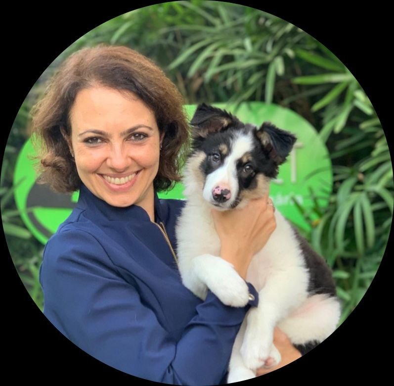
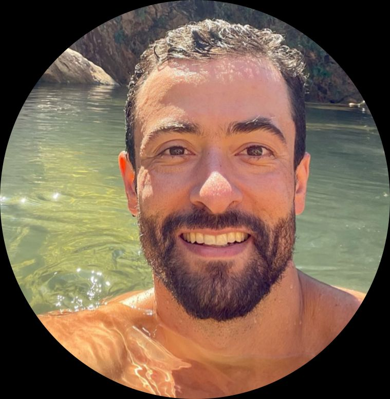
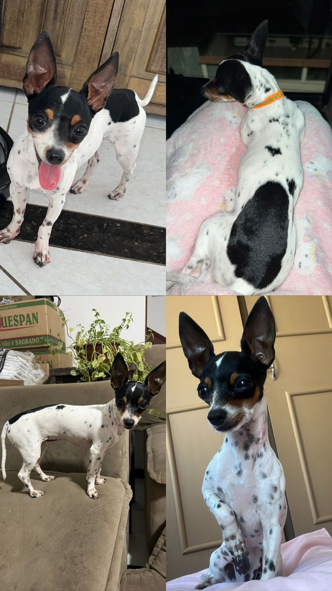

A Alimentação Natural vai muito além dos nutrientes que compõem a dieta dos nossos pets, ela faz parte da Medicina Integrativa, que visa promover mais saúde e longevidade para os nossos animais da forma mais natural possível, oferecendo uma dieta balanceada, tratamentos alternativos e eficientes e permitindo que eles possam exercer a sua natureza. Abaixo organizamos artigos e referências que validam nosso trabalho, perfis de Médicos Veterinários que trabalham com a Medicina Integrativa para vocês conhecerem e por último, mas não menos importante, nossas experiências individuais com a Alimentação Natural.
Médicos Veterinários Nutrólogos
Artigos & Referências
Nossa experiência
Médicos Veterinários Nutrólogos

Carolina Haddad
Raphaela Conti
Sylvia Angélico
Drica Herpich
Anna Campana
Julia Gomierato

Artur Vasconcelos
Felipe Haik Kfouri
Luciano Pasin
Patryne Ibrahim
Luciana Meguerditchian
Jacquelyne Motta
Artigos sobre Alimentação Natural
“Histologicamente o estômago era formada por epitélio cilíndrico estratificado, com predomínio de tecido conjuntivo denso, formando a camada de estrato compacto.”
“Assim como os lobos os cães também são carnívoros oportunistas sua anatomia apresenta características carnívoras como, dilacerar músculos, esmagar ossos e digerir a carne“
“O uso do congelamento para a preservação de alimentos data dos tempos pré-históricos”.
“O estudo comportamental destas espécies, bem como a avaliação fisiológica destes, deixa claro que cães e gatos são carnívoros”
“Observou-se que o congelamento inibiu a viabilidade de 100% das larvas, enquanto o resfriamento promoveu reduções de 87,7 e 95,7% na intensidade da infecção aos 2 e 60 dias após o consumo”
“A comida natural tem um teor muito maior de água, ajudando na hidratação do seu cachorro e na prevenção de doenças renais”
“Carnívoros mais versáteis, como os cães, possuem adaptações para digerir amido, ainda que de maneira mais limitada que nós”
“Os cães têm o hábito de mastigar pouco qualquer tipo de alimento, o que faz com que o estômago receba o alimento não muito digerido”
“O congelamento por sete dias torna todos os tipos de peixes seguros, inativando não somente o Diphyllobothrium, mas outros parasitas”
Nossa Experiência
Spike
By Nicole
Princesa
By Loanne
Snoopy
By Pâmella
Sara
By Pâmella
Mateus & Miguel
By Pâmella
Spike
O Spike é um beagle de 7 anos muito brincalhão e cheio de energia, desde o desmame a sua alimentação se baseava em ração e petiscos sem controle ou limite, mas ainda sim nunca havia apresentado nenhum problema de pele ou alergias, porém desde novinho soltava muito pelo, as vezes só de andar já caia aquele tanto de pelo, algo que eu já estranhava, mas por falta de conhecimento não busquei investigar.
Outro ponto importante é o fato da raça dele ter predisposição a obesidade, não ironicamente o spike se apresentava mais gordinho do que o normal, com várias dobrinhas no pescoço e uma barriguinha saliente.
Porém não foram esses motivos que me levaram a adotar a Alimentação Natural, o fato aconteceu quando eu, já dentro da faculdade, comecei a estudar mais sobre umas opiniões que havia desenvolvido para o meu estilo de vida, como evitar usar exageradamente medicamentos, esses pontos me fizeram questionar se eu tratava o meu pet dessa mesma forma, então pelo instagram conheci vários perfis de Médicos veterinários que debatiam sobre pontos polêmicos mas necessários como a necessidade da castração de animais saudáveis, a obrigatoriedade de vacinas como de gripe e giárdia e o maioral: Ração. A partir disso eu não parei mais de pesquisar e estudar sobre a Medicina Integrativa, até que encontrei uma profissional que eu me identifiquei para que fosse a nutróloga do Spike.
A transição dele da ração para AN foi bem tranquila, ele super se adaptou e passou a gostar de se aliemntar, coisa que antes não acontecia com a ração, suas fezes diminuíram de tamanho com odor quase imperceptível, a queda de pelo diminuiu drasticamente e como podemos ver nas imagens com a nova dieta ele conseguiu voltar para o peso ideal, perdendo suas gordurinhas localizadas, prevenindo assim a obesidade.
Experiência com Princesa
Detalhes sobre a experiência com Princesa...
Essa é a Princesa, minha cachorrinha de 1 ano e 6 meses.
Desde que ela chegou para mim, tinha muitos problemas de pele e foi diagnosticada com dermatite atópica.
Princesa tinha muitos problemas gastrointestinais também, o que a levava a quadros sérios de vômitos e diarréias a ponto de ficar internada entre a vida e a morte.
Um processo longo de trocas de rações, antibióticos, corticoides e infinitos tratamentos que não resolviam o que ela tinha, na verdade, só notávamos piora e prostração a cada dia da vida da Princesa.
Desse meio tempo, conheci o mundo da Alimentação Natural através de uma indicação de uma amiga, o que através de muita pesquisa para entender melhor sobre o assunto, me levou a dar uma oportunidade de trocar a ração da Princesa para a AN através de um acompanhamento com uma médica veterinária Nutrologa.
A partir do momento em que fizemos essa troca, de forma gradual, notamos uma diferença enorme na saúde da Princesa. Ela parou de ter vômitos e diarréias constantes, aos poucos a pele foi ficando saudável e os pelos voltando a crescer e ela nunca mais precisou ficar internada e nem ir a consultas de emergências por problemas de saúde.

Depois da AN, sem dúvidas, tenho outra cachorrinha em casa.
Uma cachorrinha cheia de vida, saudável e com uma pelagem linda mesmo já tendo ouvido que ela nunca iria ter por ser atópica.
Em troca de 3 horas a cada 20 dias para fazer a comidinha dela, ganhamos saúde, paz e longevidade de verdade.
Posso dizer que a Princesa é um reflexo de que uma alimentação saudável, balanceada, suplementada e compatível com a especie é a base de todos os seres vivos.
Hoje ela não sofre com lambedura de patas excessivas, coceiras, vermelhidão na pele e até mesmo falhas no pelo.
Hoje não sabemos mais o que é ter uma crise gastrointestinal.
Alimentação Bioapropriada salva vidas!
Snoopy
Snoopy é um beagle de 9 aninhos que come AN cozida e que teve alergia alimentar em 2023.
No começo de 2023 ele começou a presentar várias falhas no pelo que logo em seguida evoluiu para machucados que não se curavam, além da pele dele que ficou muito avermelhada.
Fizemos curativos nesses machucados, demos anti-inflamatórios prescritos pelo Médico Veterinário dele, mas nada disso resolvia. O Médico dele trocou a alimentação dele pra uma ração hipoalergênica de frango hidrolisado da PremieR, só que mesmo assim o quadro dele não melhorava, ao contrário só piorou depois disso.
Então foi quase um ano com ele e as tutoras (eu e minha irmã) dele sofrendo com isso, nenhum Médico Veterinário sabia resolver o caso dele.
Durante esse tempo eu e minha irmã pesquisamos bastante do que poderia estar acontecendo com ele, chegamos até pensar que ele tinha desenvolvido algum tipo de dermatite. Até que nós descobrimos o mundo da Alimentação Natural e decidimos tentar introduzir esse tipo de alimentação pra ele.
Antes disso, a gente fez um teste alérgico com ele, para saber que alimentos ele mais tinha alergia e marcamos uma consulta com uma Médica Veterinária Nutróloga, a Patryne Ibrahim.
A Médica fez uma dieta de AN cozida totalmente restrita para ele, com somente carne suína, além de vegetais e carboidratos que não causavam tantas inflamações nos animais. Ele ficou se alimentando com essa dieta por uns três meses mais ou menos, mas logo no primeiro mês ele já apresentou melhoras.
Como mostra nas fotos, os ferimentos e a pele dele melhoraram muito depois desse primeiro mês só com essa dieta restrita. Logo depois desses meses, foi introduzido outros tipos de proteínas de origem animal, pois a tendência é essa alergia “desaparecer” à medida que o corpo desinflama.
Hoje em dia, com quase um ano de AN cozida, ele está muito bem, ama muito o papa dele e apesar dos ferimentos e pele estarem curadas, ele ainda tem as cicatrizes no corpinho dele.
Sara
Sara é uma gatinha SRD de 5 anos que come AN cozida e que quase se tornou renal.
Quando ela chegou na nossa casa em 2021 bem subnutrida, e apesar disso ela não apresentava nos exames que tinha problemas renais. Foi em 2022, quando nós fizemos outros exames que ela apresentou a creatinina alta e o Médico Veterinário somente passou uma medicação injetável para ela que abaixou a creatinina.
Um detalhe importante é que ela não gosta de beber água e não bebia água por nada, então isso provavelmente contribuiu para piorar o quadro dela.
Após um ano em 2023, realizamos os exames nela novamente e foi constatado que a creatinina deu um valor alto novamente, com isso o Médico dela prescreveu a ração para gatos renais.
Ao realizar a consulta para mudar a alimentação do Snoopy pra AN, aproveitamos e fizemos também para Sara.
Então depois de quase um ano de AN cozida a creatinina dela que estava 2,2mg/dL e a ureia em 73,9 mg/dL em 2023 passou para 0,9 mg/dL de creatinina e 51,1 mg/dL de ureia em 2024.
Miguel e Mateus
Miguel e Mateus são gatinhos frajolas SRD, o Miguel tem cerca de 9 anos e o Mateus tem cerca 4 anos (não sabemos a idade exata deles). Todos os dois se adaptaram super bem a AN cozida, apesar de terem suas preferências com certos tipos de alimentos.


.jpeg)
.jpeg)
.jpeg)
.jpeg)
.jpeg)
.jpeg)
.jpeg)
.jpeg)
.jpeg)
.jpeg)
.jpeg)
.jpeg)
.jpeg)
.jpeg)
.jpeg)